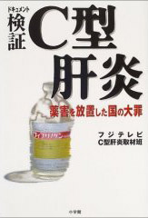

書評コーナー
「薬のチェックは命のチェック」で取り上げた書籍を紹介しています。
季刊誌27号より
検証C型肝炎 薬害を放置した国の大罪
フジテレビC型肝炎取材班／小学館
薬害肝炎の沈黙を破るきっかけとなった「ニュースJAPAN」の取材をめぐる舞台裏の記録である。 薬害肝炎訴訟に先立つ2001年初頭より、フジテレビC型肝炎取材班が日本全国、更には米国まで渡り取材したもので、 真理を追究するマスコミの理念に触れた気がした。 様々な角度から検証した報道であり、肝炎患者のみならず国民への力強いメッセージでもある。
各章の見出しはインパクトがあり、特に第４章「スクープ」は、マスコミの舞台裏が詳細に記述されている。 すべて回収され１個も残っていないはずの血液製剤フィブリノゲンの瓶を探し当てた場面は、 まるでドラマを見ているようで大変興味深く、息もつかずに読み進められる。 第７章「アメリカの汚れた血」では、売血の実態がわかり、C型肝炎の根本の原因を明快に記している。
第９章「終わりなき闘い」には、薬害肝炎訴訟原告の被害実態が書かれている。全国初の実名原告となった私も、 提訴前から取材をから、既に４年以上が経過した。
子どもたちの未来には、薬害が繰り返されぬように、この闘いは必ずや終わらせなければならないと誰もが実感するであろう。
■ 18.6×13.2cm ２８７頁/本体価格1500円（税別）
ご購入はこちらからできます